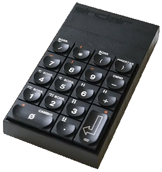

Spectrum 128
The Spectrum 128, first launched in Spain in 1985, looks externally exactly the same as the Spectrum+ save for the addition of a large (and very hot) heat sink on the right-hand side. The big changes were inside the casing. Most obvious was the 128K of memory, of which you could use about 104K (the rest being used to hold a copy of the ROM). A new three-channel sound chip, very similar to that used later on the Atari ST, was also included, as was a new implementation of Sinclair BASIC and a variety of sockets. Monitor output was possible for the first time, and the annoying "dot crawl" problem was finally fixed.

The Spanish version included a separate numeric keypad (right) which came with the machine. In the UK it was sold separately for £19.95, but did not sell at all well, making it a very rare item today.
When the Spectrum 128 reached Britain in February 1986, Sinclair Research was already in deep financial trouble following the C5 fiasco. Although the Spectrum 128 was a competitive product (priced at £179.95, with the Spectrum+ slashed to £129.95), it failed to attract a great deal of public interest. It had been launched at the wrong time of year - had it been available for the peak Christmas season, things might have been different - and the revised hardware led to serious compatibility problems with existing Spectrum software and peripherals. Only a few months later, Amstrad took over Sinclair's computer business and the Spectrum 128 was quietly dropped, having spent only about six months on the shelves.